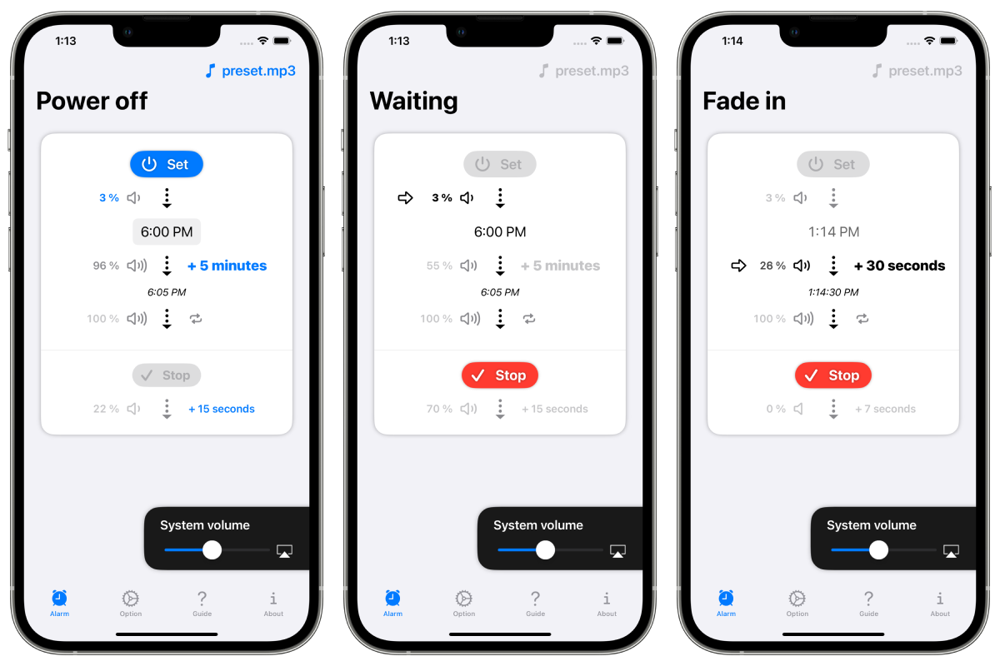

FadeInAlarm
Будильник зі звуком, який поступово стає гучнішим з часом


Огляд.
Ця програма для iPhone та iPad сповіщає вас про вибраний вами час, поступово збільшуючи гучність будильника з плином часу, тоді як звичайні будильники звучать гучним, бадьорим попереджувальним сигналом.
Ви можете поступово збільшувати гучність будильника протягом тривалого періоду часу, від десятків секунд до десятків хвилин.
Це рекомендується людям, які відчувають стрес від звуку звичайного будильника, або тим, хто хоче знати про певний час через певний проміжок часу, а не в певний момент часу.

Варіанти.
Час затухання
- 10 сек.
- 30 сек.
- 1 хв
- 5 хв
- 30 хв
- 1 година
Час згасання
- 3 сек.
- 7 сек.
- 15 сек.
- 30 сек.
- 1 хв.
Гучність у режимі очікування
-
10%
-
5%
-
3%
-
1%
- 0% (безшумний)
Послідовність роботи
- Після натискання кнопки запуску додаток починає відтворювати звук будильника на дуже низькій гучності (або беззвучно).
- Додаток продовжуватиме відтворювати звук будильника доти, доки користувач не натисне кнопку "Стоп".
- У встановлений час гучність поступово збільшується і досягає повної гучності через заданий користувачем інтервал часу (від десятків секунд до десятків хвилин).
- Натискання кнопки "Стоп" поступово зменшує гучність через заданий користувачем інтервал часу (від декількох секунд до хвилини). Додаток припиняє відтворення звуку будильника, коли настає повна тиша.
Демонстраційне відео.
Примітки.
Вам потрібно підготувати власні джерела звуку!
Будь ласка, імпортуйте звукові файли (наприклад, mp3), підготовлені користувачем самостійно.
Звукові дані попередньо встановлені в додатку з метою тестування.
Цей додаток більш незручний, ніж звичайні будильники!
З різних причин ця програма відрізняється від звичайних будильників тим, що вона не може подати сигнал тривоги, коли сама програма не запущена. Вам потрібно запустити програму заздалегідь.
Наприклад, якщо ви хочете використовувати цю програму о 6 ранку для будильника, запустіть її перед сном і натисніть кнопку "Пуск".
У режимі очікування також існують обмеження!
Ви можете заблокувати пристрій або користуватися іншими програмами в режимі очікування, але потрібно бути трохи обережним, щоб не перервати режим очікування будильника.
- Режим очікування будильника переривається в таких випадках
- Ситуації, коли ви переглядаєте довгі відео в інших програмах.
- Ситуації, коли відтворюється пісня в музичному додатку пристрою
- Режим очікування будильника переривається в таких ситуаціях, але відновлюється автоматично
- Ситуації, коли використовується програма камери.
- Ситуації, коли звук генерується якимось системним сповіщенням.
Технічні характеристики
Ціна
Безкоштовно
Покупки в додатку
Приховати рекламу: $1
Платформи
- iOS 16.0 і вище
- iPadOS 16.0 і новіше

日本語(native)
English
Indonesia
Español
Deutsch
Français
Português
Русский
中文
Українська
한국어